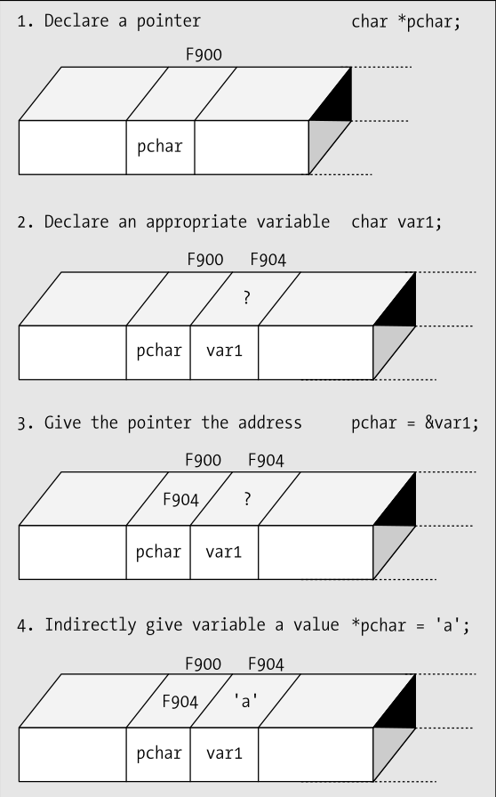
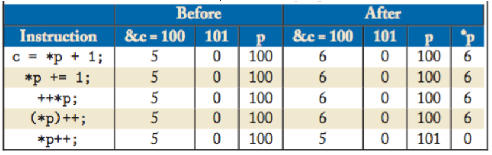
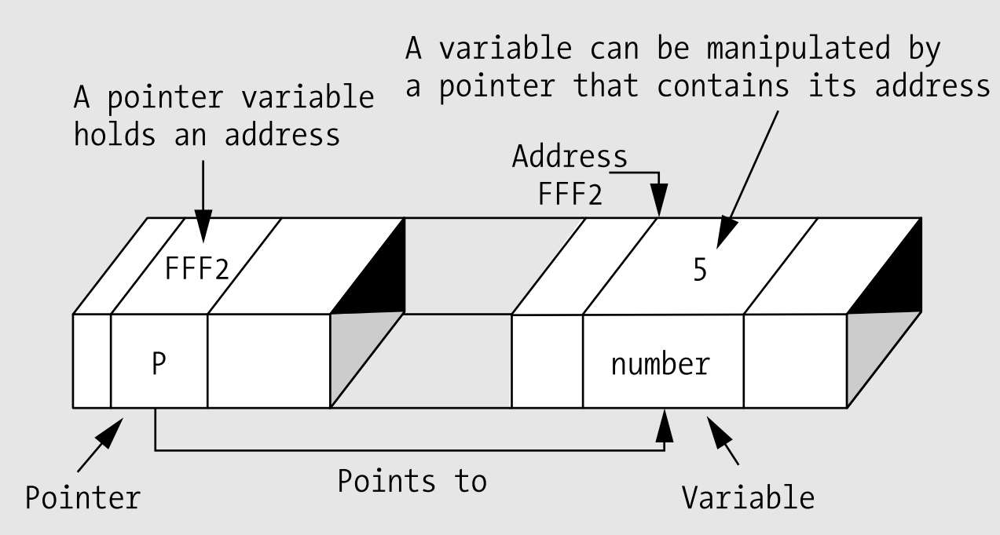

Header Files
Header Files
- Source file: .cpp
- Header file: .h
- Gebruikt voor
- definiëren van:
- Functie prototypes
- Variabelen
- Macros
- Bevat geen logica
- "#include" in source file
Header file gebruiken
- Door preprocessor te gebruiken
- Declareer dit in het begin van de source file
- #include "TestHeader.h"
- "Zoekt in folder"
- #include <TestHeader.h>
- "Zoekt in PATH"
#include "mylib.h"
#include <mylib.h>
int main(){
}
Werking include
test_header.h
int ledPin = 7;
myproject.ino
#include "test_header.h"
int state = HIGH;
void setup(){
//DO SOMETHING
}
void loop(){
//DO SOMETHING
}
myproject.ino


Datatypes zijn niet belangrijk (void *pointer)

Clear a bit
Toggle a bit
Test a bit
int ledPin = 7;
int state = HIGH;
void setup(){
//DO SOMETHING
}
void loop(){
//DO SOMETHING
}
Include Guard
- Geen ambiguïteit
- Geen 2 dezelfde includes
- Kan file size verkleinen
#ifndef _TEST_LIB_H_
#define _TEST_LIB_H_
/***************/
/* */
/* YOUR */
/* CODE */
/* HERE */
/* */
/***************/
#endif
Werking Include Guard
mystruct.h
struct myStruct{
int x;
double y;
char z;
};
myproject.ino
#include "mystruct.h"
#include "mystruct.h"
void setup(){
//DO SOMETHING
}
void loop(){
//DO SOMETHING
}
myproject.ino
struct myStruct{
int x;
double y;
char z;
};
// Dubbele declaratie
// Compile Error
struct myStruct{
int x;
double y;
char z;
};
void setup(){
//DO SOMETHING
}
void loop(){
//DO SOMETHING
}
Werking Include Guard
mystruct.h
#ifndef _TEST_LIB_H_
#define _TEST_LIB_H_
struct myStruct{
int x;
double y;
char z;
};
#endif
myproject.ino
#include "mystruct.h"
#include "mystruct.h"
void setup(){
//DO SOMETHING
}
void loop(){
//DO SOMETHING
}
myproject.ino
struct myStruct{
int x;
double y;
char z;
};
// Geen compile error
void setup(){
//DO SOMETHING
}
void loop(){
//DO SOMETHING
}
Conditional Include
- Selectief Include
- Specifieke output afhankelijk van compile opties
- Cross Compatibility
- Code verkleinen
#ifndef _AVR_IO_H_
#define _AVR_IO_H_
#include
#if defined (__AVR_AT94K__)
# include
#elif defined (__AVR_AT43USB320__)
# include
#elif defined (__AVR_AT43USB355__)
#endif
#endif /* _AVR_IO_H_ */
Classes
Classes
- Class Definitions
- Class Accces Modifiers
- Class Member Functions
Class Definitions
class Box {
public:
double length; // Length of a box
double breadth; // Breadth of a box
double height; // Height of a box
double getVolume(void);// Returns box volume
};
Class Accces Modifiers
- public
- Members toegankelijk buiten de class
- Geen set/get
- protected
- Members toegangelijk voor child classes
- Overerving niet vaak gebruik op het Arduino platform
- private
- Members alleen toegankelijk voor class members
- Set / Get nodig
- Default optie
class Base {
public:
// public members go here
protected:
// protected members go here
private:
// private members go here
}
Class Members Function
Inline Functie
class Box {
public:
double length; // Length of a box
double breadth; // Breadth of a box
double height; // Height of a box
double getVolume(void) {
return length * breadth * height;
}
};
Functie met Scope Resolution Operator
class Box {
public:
double length; // Length of a box
double breadth; // Breadth of a box
double height; // Height of a box
};
double Box::getVolume(void) {
return length * breadth * height;
}
Example
Morse.h
#ifndef Morse_h
#define Morse_h
#include "Arduino.h"
class Morse
{
public:
Morse(int pin);
void dot();
void dash();
private:
int _pin;
};
#endif
Morse.cpp
Morse::Morse(int pin)
{
pinMode(pin, OUTPUT);
_pin = pin;
}
void Morse::dot()
{
digitalWrite(_pin, HIGH);
delay(250);
digitalWrite(_pin, LOW);
delay(250);
}
void Morse::dash()
{
digitalWrite(_pin, HIGH);
delay(1000);
digitalWrite(_pin, LOW);
delay(250);
}
Pointers
Wat is een pointer
Een pointer is een variabele dat een geheugen locatie bevat voor andere elementen in de code. Een pointer de adressen van volgende elementen bevatten
- Een adres
- Variabelen
- Functies
- Pointers
Geheugen is adresseerbare blok bits!
Wat is een pointer
- Zorgt voor efficiëntere code
- Verhoogt de complexiteit
- Pointers hangen nauw samen met arrays
- Pointer hangt vast aan een datatype
Wat is een pointer
Pointers Declaren
int number = 10;
int *pointer = &number;
Pointer Operators
- Adres &
- Met & vraag je het adres op van een variable
- Dereferencing *
- Met * vraag je de achterliggende data op, * ook de indirection operator genoemd.
Pointer Voorbeelden
| Declaratie | Value | Adres |
| int Val = 2 | 2 | 54428 |
| int *pVal = &Val | 54428 | 97880 |
| int secVal = *Val | 2 | 97932 |
| *Val = 5 | 5 | 54428 |
| pVal = pVal + 1 | 54444 (+16) | 97880 |
Dus ...
- int *p = &c
- De pointer p wijst naar het locatie van c
- int k = *p
- k is gelijk aan de achterliggende data van p
- *p = 0
- De achterliggende data = 0
- *j = *p
- De achterliggende data van j is gelijk aan de achterliggende data van p
Oefening
- Declareer 3 integers x, y en z met de respectievelijke waardes 1, 5, 155
- Declareer 3 pointers p_x, p_y, p_z die verwijzen naar de geheugen locaties van x,y,z
- Print de waardes af van de achterliggende data van de pointers als ook de locaties
Volgorde van bewerkingen
- * en & hebben voorrang op rekenkundige operators
- *, &, ++ en -- hebben dezelfde priorieit
- * en & worden van rechts naar links geëvalueerd
- *p++ en (*p)++ zijn verschillend
- *p++ verhoogt het adres opgeslagen in p en haalt daarna de achterliggende data van het nieuwe adres op
- (*p)++ verhoogte de achterliggende data op adres p
Volgorde van bewerkingen
Veronderstel dat
- char c = 5
- char *p
- p = &c
Swap Functie
- Het volgende stuk code swap de variabelen niet
- Er word een lokale kopie gemaakt
- Dit noemt Pass By Value
- De originele data word beschermt
void swap(int x, int y){
int tmp;
tmp = x
x = y;
y = tmp;
}
void main(void){
int a = 10;
int b = 13;
swap (a, b);
}
/*y == ? && z == ?*/
Pass By Reference
- De data wisselt tussen de variabelen
- Toegang tot de variabele is mogelijk door indirecte toegang
- Data moet niet gedupliceerd worden
- Pass By Reference
- Concept bestaat ook in andere programmeer talen
void swap(int *x, int *y){
int tmp;
tmp = *x
*x = *y;
*y = tmp;
}
void main(void){
int a = 10;
int b = 13;
swap (&a, &b);
}
/*y == ? && z == ?*/
Oefening
- Declareer 3 integers x, y en z met de respectievelijke waardes 1, 5, 155
- Schuif vanuit een functie de waarde x naar y, y naar z en z naar a
Pointers & Arrays
- Arrays is een blok van dezelfde data types
- Een array kan beschouwd worden als een pointer van hetzelfde type
- Een pointer kan een startpunt zijn voor een array
int *p
int a[1O]
p = &(a[2]);
/*Dan klopt het volgende*/
*p = a[2];
*(p+ 1) = a[3];
Gevaren van pointers
- Rechtstreekse manipulatie van het geheugen
- Kent geen out of bounds
int a[1O]
int *p = &(a[0]);
int i = a[11] //error
int j = *(p + 15) //mogelijk
Null Terminated C String
- In C worden alle char arrays getermineerd door '\O'
- char *x = "hello" == "hello\0"
- char x[4] = "hello" == "hello\0"
- Dit maakt het mogelijk om simpels char arrays te kunnen manipuleren
nt strlen(char *s) /* added by RJH; source: K&R p99 */
{
int n;
for(n = 0; *s != '\0'; s++)
{
n++;
}
return n;
}
Oefening
Schrijf een functie met pointers waar je een 2 arrays aan elkaar rijgt (concat)Bit Operaties
Manipulatie op bitniveau
- Microcontroller werkt met registers
- Meer controle, Meer kracht
- Efficiëntie
Stel je eens voor?
Status van een lamp
- Status van een lamp: 1 ? 0
- 1 bit informatie
- sizeof(int) = 4 bytes
- Overkill
- Kleinste datatype =
- Byte
- Oplossing bitoperaties
Bitwise Operators
| Symbol | Operator |
|---|---|
| & | bitwise AND |
| | | bitwise inclusive OR |
| ^ | bitwise XOR (eXclusive OR) |
| << | left shift |
| >> | right shift |
| ~ | bitwise NOT (one's complement) (unary) |
Bitwise Operators
Bitwise AND (&)
| bit a | bit b | a & b (a AND b) |
|---|---|---|
| 0 | 0 | 0 |
| 0 | 1 | 0 |
| 1 | 0 | 0 |
| 1 | 1 | 1 |
11001000 &
10111000 =
--------
10001000
Bitwise OR (|)
| bit a | bit b | a | b (a OR b) |
|---|---|---|
| 0 | 0 | 0 |
| 0 | 1 | 1 |
| 1 | 0 | 1 |
| 1 | 1 | 1 |
11001110
| 10011000
--------
= 11011110
Bitwise Operators
Bitwise XOR (^)
| bit a | bit b | a ^ b (a XOR b) |
|---|---|---|
| 0 | 0 | 0 |
| 0 | 1 | 1 |
| 1 | 0 | 1 |
| 1 | 1 | 0 |
11001110
| 10011000
--------
= 01010110
Bitwise OR (|)
| bit a | ~a (complement of a) |
|---|---|
| 0 | 1 |
| 1 | 0 |
~11001110
--------
= 00110001
Bitwise Operators
Left Shift
11001110 << 1
--------
= 01100010
11001110 << 5
--------
= 11000000
- Opvullen met 0
- Maal 2
Right Shift
11001110 >> 1
--------
= 01100111
11001110 >> 5
--------
= 00000110
- Opvullen met 0
- Delen door 2
Testje
Klik HierBitwise Assigment
| Symbol | Operator |
|---|---|
&= |
bitwise AND assignment |
|= |
bitwise inclusive OR assignment |
^= |
bitwise exclusive OR assignment |
<<= |
left shift assignment |
>>= |
right shift assignment |
Bit mask
Bits Activeren
10010101 10100101
OR 11110000 11110000
= 11110101 11110101
byte x = 0x95A5;
byte y = 0xF0F0
byte z = x | y;
byte z = 0xF5F5;
Bits (De)Selecteren
10010101 10100101
AND 00001111 00001111
= 00000101 00000101
byte x = 0x95A5;
byte y = 0x0F0F
byte z = x & y;
byte z = 0x05F5;
Bit mask
Bitwaarde togglen
10011101 10010101
XOR 00001111 11111111
= 10010010 01101010
byte x = 0x9D95;
byte y = 0x0FFF
byte z = x ^ y;
byte z = 0x926A;
Bitwaarde opvragen
10011101 10010101
AND 00001000 00001000
= 00001000 00000000
byte x = 0x97A5;
byte y = 0x0808;
byte z = x & y;
byte z = 0x0808;
Vaak gebruikte operaties
- Set a bit
bit_fld |= (1 << n) bit_fld &= ~(1 << n) bit_fld ^= (1 << n) bit_fld & (1 << n)Voorbeelden
Write a function setbits(x,p,n,y) that returns x with the n bits that begin at position p set to the rightmost n bits of y, leaving the other bits unchanged.
unsigned setbits(unsigned x, int p, int n, unsigned y)
{
return (x & ((~0 << (p + 1)) | (~(~0 << (p + 1 - n))))) | ((y & ~(~0 << n)) << (p + 1 - n));
}
Voorbeelden
Write a function invert(x,p,n) that returns x with the n bits that begin at position p inverted (i.e., 1 changed into 0 and vice versa), leaving the others unchanged.
unsigned invert(unsigned x, int p, int n)
{
return x ^ (~(~0U << n) << p);
}
Oefening
- Schrijf een rotate left (ROL) functie
- Maak gebruik van unsigned integers
- Gebruik circuits.io